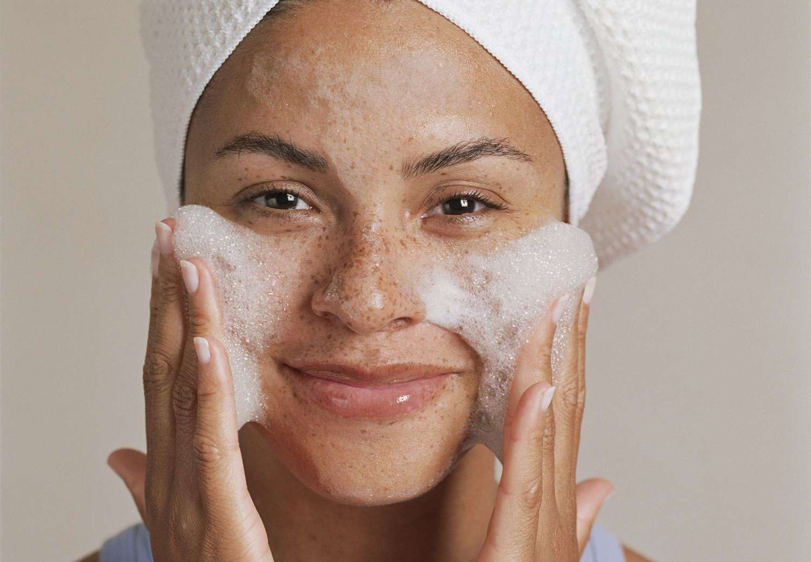
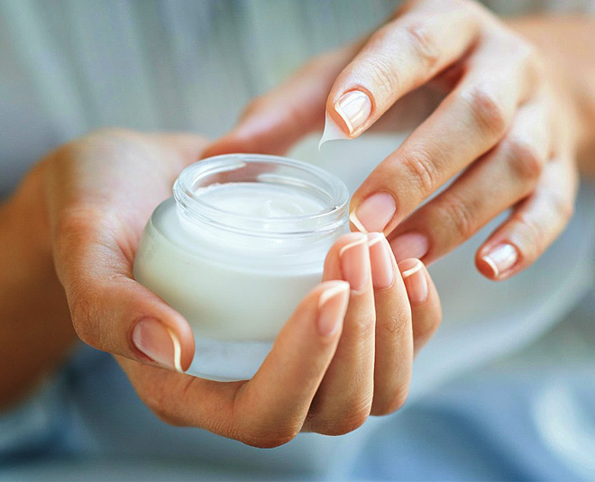
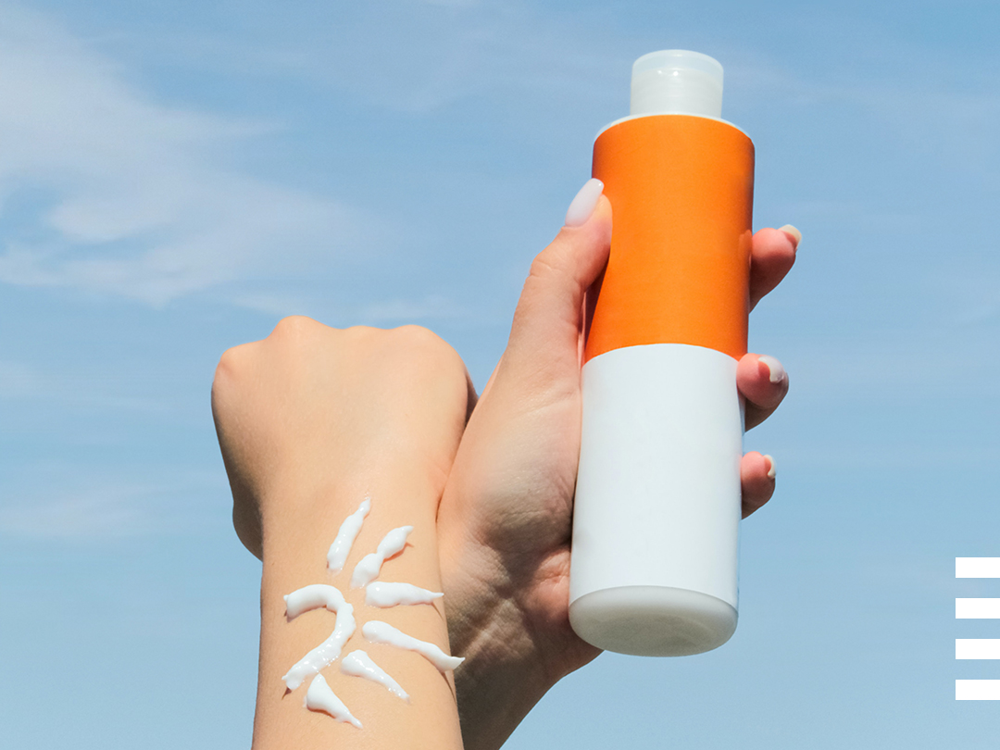

Basic Skincare Routine
Your skin care routine is an important part of every day use. Whether you want a simple 3-step routine for morning or have time for a full 10-step regimen at night, the order in which you apply your products matters. But we are focusing more on the basic steps, so that we all can learn together.
What are the basic skin care routine?
Now, we all know know about skin care but do we use it in the right order? Let's reveal step by step with detailed explaination.
Cleanser
Let's start with a cleanser. It actually have three types of cleaser but the most important and basic one is water based cleanser. Cleanser is used to remove any dirt, residue and sweat that built up overnight.

The most important thing is you need to cleanse your face twice a day. Morning and night. That's the perfect time to cleanse your face. A thorough cleanse clears your skin of oil and debris that can lead to clogged pores and dullness. It will also make your skin absorb the beneficial ingredients in the rest of your routine. But if you have dry or sensitive skin, try washing only at night and rinsing your face with water in the morning.
Here's how to choose the best facial cleanser based on your skin type :
Serum
Serum is totally optional for everyone. But because most of our local products made serum, so I include it in this step. Most of the serum have active ingredients that can help with certain concerns
A serum tailored to your skin concerns can both treat and protect your skin with powerful ingredients. Serums are best
used in the morning, while others are ideal for night time. These are some of the
example of powerful ingredients :
Moisturiser
Moisturiser are the core important steps in your basic skincare routine because it will keep your skin hydrated and lock up all of the products that you use before-hand. Therefore, you must choose the best moisturiser for your skin.

Moisturise also have their own texture according to your skin type, so let's take a look and decide which will suit you the best
Either way, dematologists recommend moisturisers for all skin types since hydrating is crucial. Look for ingredients like Ceramides or Hyaluronic Acid because these ingredients will help building blocks of moisture in skin.
Sunscreen
Out of all of the steps, Sunscreen is the most important one. Why? The sun is the number one reason skin ages prematurely. If you don't wear sunscreen, might as well not do any of the other steps. If you're treating hyperpigmentation or dark spots WITHOUT sunscreen, it's like taking two steps forward, and one step backward.

There are two types of sunscreen formulas :
But make sure to choose sunscreen that are suitable for your skin. For example, Oily skin should go with non-comedogenic, oil-free gel formulas. While Dry skin should avoid spray or gel sunscreens with alcohol.